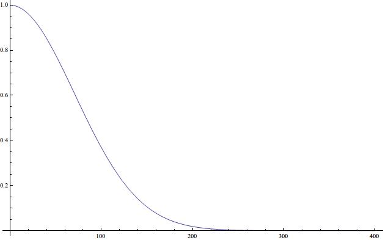
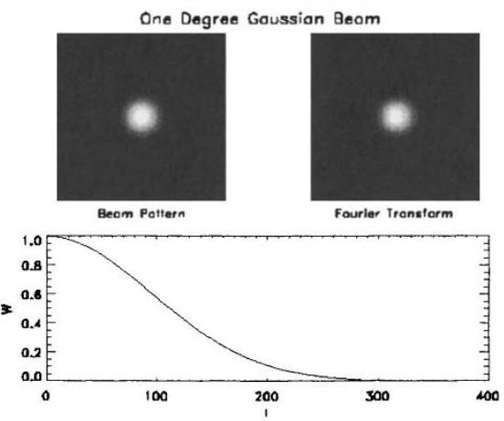
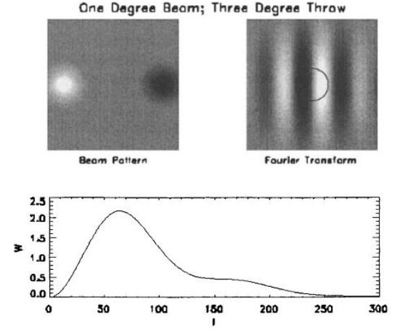
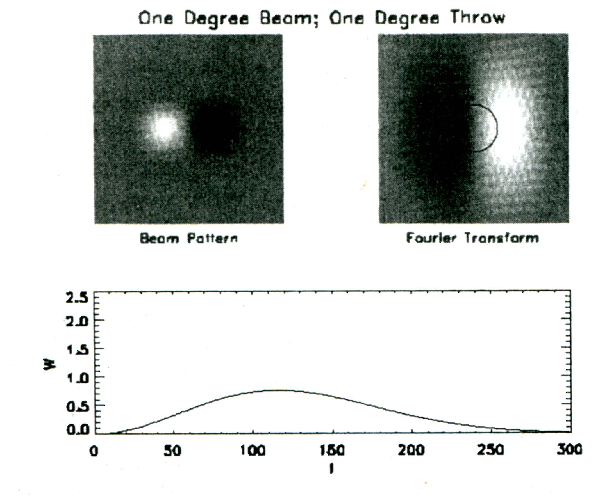

宇宙学中的统计方法【乙】
宇宙学中的统计方法笔记系列，第二篇：CMB 中的统计方法。
Contents
系列文章目录：
继续前面的 likelihood 的讨论，不过现在要扩展到 CMB 中来。与前面的不同的地方是，之前的例子中，我们的测量是每次一个值的，但是在 CMB 的测量中，我们的数据是一个分布，而且之前的例子的每个数据点我们是有理论可以完全预测的，而在 CMB 中，我们的分布的一个特定的数据点，我们是没有理论来完整预测的，而是只有一个对所有点的统计的预测。
CMB 的数据记录和相关理论
CMB 测量方法和数据记录待补充。flag 1
CMB 的观测中，我们把天空分成很多像素点，针对每个像素点记录温度各项异性。下面的分析中我们使用的温度各项异性，是相对于平均温度的差异。
对于各项异性的理论预言，我们选择较为简单的 Gaussian 分布的情况，即每个像素点上的温度差异分布符合 Gaussian 分布。
单像素点的 likelihood
现在我们先建立数学描述。对于天空上的一个点，我们可以测量温度各项异性，其值为 \(s\)，而预测值（estimator）记做 \(\Delta\)。跟前面的例子一样，我们同样会有一个代表预测结果可靠性的量（ Modern Cosmology 中把这个叫做 variance of the estimator）的量 \(C_N\)，类似前面的例子，对于 \(s\) 和 \(\Delta\) 同样有一个分布，
\[ P[s] = \frac{1}{\sqrt{ 2\pi C_N }} \exp\left( -\frac{(\Delta – s)^2}{2C_N}\right) \]
对于理论预测，如果我们取暴涨模型所给定的 Gaussian 分布，那么就有下面的这个关于 \(S\) 的分布，其中参量有 \(s\) 和 \(C_S\)
\[ P[\theta(\Delta,s)] = \frac{1}{\sqrt{2\pi C_S}}\exp\left( -\frac{s^2}{2C_S}\right) \]
现在，我们关心的两个量是 \(\Delta\) 和 \(C_S\)，因为 \(\Delta\) 是我们要的温度各项异性值，而 \(C_S\) 直接跟我们后面要了解的一个量 \(C_l\) 关联，\(C_l\) 是我们要的最终结果，而 \(s\) 这样的量我们并不关心。所以，现在这种情况下，我们需要求的 likelihood 其实是 \(P[\Delta|C_S]\)，也就是给定一个带有参数 \(C_l\) 的理论，得到数据 \(\Delta\) 的概率。
那么根据概率论（之前的例子中有具体计算步骤）
\[ P[\Delta|C_S] = \sum_s P[\Delta|s] \times P[s|C_S] \]
在 Modern Cosmology 中，Scott Dodelson 并没有对这里的 likelihood 进行很多解释。这里 flag 一下，提醒以后注意回来检查精简这段描述。flag 2
于是 Likelihood function 是概率密度的积分
\[ {\scr L} = \int^\infty_{-\infty} \mathrm ds \frac{1}{\sqrt{2\pi C_S}}\exp\left( -\frac{s^2}{2C_S}\right) \frac{1}{\sqrt{ 2\pi C_N }} \exp\left( -\frac{(\Delta – s)^2}{2C_N}\right) \]
定义 \(C=C_S+C_N\) 是 full covariance matrix，把 \(s\) 积分积掉，
\begin{eqnarray}
{\scr L} &=& \int \mathrm ds \frac{1}{2\pi \sqrt{C_S C_N}} \exp\left( -\frac{s^2 C_N + (\Delta – s)^2C_S}{2C_S C_N} \right) \\
&=& \frac{1}{2\pi\sqrt{C_S C_N}} \int \mathrm ds \exp\left( -\frac{ C(s- C_S \Delta/C)^2 + \Delta^2 (C_S C_N/C) }{2C_N C_S} \right) \\
&=& \frac{1}{\sqrt{2\pi C_S}}\exp\left( – \frac{\Delta^2}{2C} \right) \int \mathrm d(s – C_S\Delta/C)\exp\left( – \frac{C(s – C_S\Delta/C)^2 }{2C_S C_N} \right) \\
&=& \frac{1}{\sqrt{2\pi C}}\exp\left( -\frac{\Delta^2}{2C} \right)
\end{eqnarray}
多像素点情况
待补充。详细说明为何可以使用矩阵形式。flag 3
这样我们就得到了天空中一个像素点的情况，可以推广到 N 个像素点的情况，
\begin{equation}
{\scr L} = \frac{1}{(2\pi)^{N/2}(\mathrm {det} \bf C)^{1/2}} \exp\left( – \frac{1}{2} \bf \Delta \bf C^{-1} \bf\Delta \right) \label{eqn-multipixellikelihood}
\end{equation}
上式（方程(\ref{eqn-multipixellikelihood})）中 \(\Delta\) 是长度为 \( N \)测量数据矢量，而 \(C\) 是 \(N\times N\) 的 full corariance matrix。
Covariance Matrix
上面出现的三个 covariance matrix 分别是 \(C_S\)，\(C_N\)，\(C\)。其中 \(C_S\) 是出现在 \(s\) 的分布中的，也就是说是理论上 \(s\) 的分布宽度，称之为 signal covariance matrix，与测量中的噪声无关。从 \(C_S\) 到 \(C\) 其实是个很复杂的过程，严格的说，\(C\) 中需要考虑到任意的两个 parameter 直接的关联。
详细说明如何关联。flag 4
Covariance Matrix 的求解
如果我们之考虑 covariance matrix 的对角项，
\[ C_{S,ii} \equiv \langle s_i s_i \rangle \]
其中元素
\[ s_i = \int \mathrm d \hat n\Theta(\hat n) B_i(\hat n) \]
其中 \(\Theta(\hat n)\) 是温度背景，\(B_i\) 是 beam pattern，也就是代表信号的性质的量。对于每个像素点都要把所有的方向的光子都考虑进来。
把 \(s_i\) 带入 \(C_{S,ii}\) 可以得到 covariance matrix
\[ \frac{C_{S,ii}}{T^2} = \int \mathrm d\hat n \int \mathrm d\hat n’ B_i(\hat n)B_i(\hat n’) \sum_{lm} Y_{lm}(\hat n)\sum_{l’m’} Y_{l’m’}^*(\hat n’)\langle a_{lm}a_{l’m’}^* \rangle \]
其中用到了
\[ \Theta(\hat n) = \sum_{i=1}^\infty \sum_{m=-l}^{l} a_{lm} T Y_{lm}(\hat n) \]
*Modern Cosmology* 中写 \(\Theta\) 时不含 \(T\)，但是书中 11.35 式却含有 \(T\)，所以我把 \(T\) 添加到了 \(\Theta\) 的分解中。 flag 5
把下式带入 covariance matrix 的表达式
\[ \langle a_{lm} \rangle; \langle a_{lm} a_{l’m’}^* \rangle = \delta_{ll’}\delta_{mm’}C_l \]
把 \(l’,m’\) 的求和求出来
\[ \frac{C_{S,ii}}{T^2} = \int \mathrm d\hat n \int \mathrm d\hat n’ B_i(\hat n) B_i(\hat n’) \sum_{l} C_l \sum_m Y_{lm}(\hat n) Y_{lm}^*(\hat n’) \]
我们知道球谐函数有如下性质
\[ \sum_m Y_{lm}(\hat n)Y_{lm}^*(\hat n’) = (2l+1) P_l (\hat n\cdot \hat n’)/4\pi \]
定义
\[ W_{l,ii} = \int \mathrm d\hat n\int \mathrm d\hat n’ B_i(\hat n)B_i(\hat n’) P_l(\hat n\cdot \hat n’) \]
其中的 \(\hat n \cdot \hat n’\) 可以写成 \(\cos(x)\)，其中 \(x\) 是 \(\hat n\) 和 \(\hat n’\) 之间所夹的弧长。这样我们可以在一个二维平面上定义两个矢量，\(\vec x\) 和 \(\vec x’\)，使得 \( \cos(x) = \cos(|\vec x – \vec x’|) \)，即 \(\hat n\cdot \hat n’ = \cos(\vec x – \vec x’)\)
于是
\[ W_{l,ii} = \int \mathrm d^2x\int \mathrm d^2 x’ B_i(x) B_i(x’) P_l(\cos(|\vec x – \vec x’|) ) \]
为什么变成二次导数了？我求的是一次导数。回来看看。下面还是继续按照 *Modern Cosmology* 里面所讲的来写。 flag 6
所以 covariance matrix 变成
\[ \frac{C_{S,ii}}{T^2} = \sum_l \frac{2l+1}{4\pi} C_l W_{l,ii} \]
关于上面提到的 window function \(W_{l,ii}\)， 还可以继续化简。首先，我们把 Legendre polynomials 表达出来，不过这里要用一个近似，就是在 l 很大的时候， Legendre polynomials 近似变成 Bessel function.
\[ P_{l} (\cos(|\vec x – \vec x’|)) \rightarrow J_0 (l|\vec x – \vec x’|) = \frac{1}{2\pi} \int_0^{2\pi} \mathrm d\phi \exp{-il |\vec x – \vec x’| \cos\phi} \]
其中 \(\phi\) 的意思是 \(l\) 和 \(\vec x – \vec x’\) 之间的额夹角。\(l\) 的方向可以选做某条坐标轴的方向比较方便。
这样我们就可以把 window function 简化成
\[ W_{l,ii} = \frac{1}{2\pi} \int_0^{2\pi}\mathrm d\phi |\tilde B_i(\vec l)|^2 \]
其中
\[ \tilde B_i(\vec l) \equiv \int \mathrm d^2x B_i(\vec x)e^{-i \vec l \vec x} \]
是 \(B_i\) 的 Fourier 变换。
这样我们就可以把 covariance matrix 的对角项表示出来了，选择特定的 window function，就可以求解。
但是这只是对角项，实际上非对角项也是存在的，严格的计算需要把非对角项也包括进来。
Window Function 的例子
Gaussian Beam
对于 Guassian beam 的情况，beam pattern 写作
\[ B_i(\vec x) = \frac{1}{2\pi \sigma} \exp\left( -\frac{(\vec x -\vec x_i)^2}{2\sigma^2} \right) \]
先令 \(\vec x_i = 0\)，方便 Fourier 变换。
Fourier 变换得到
\[ \tilde B_i(\vec l) =\frac{1}{2\pi \sigma^2} \int \mathrm d^2x e^{-i\vec l \cdot\vec x} \exp\left( -\frac{x^2}{2\sigma^2} \right) = e^{-l^2\sigma^2/2} \]
因为 Fourier 变换之后并不涉及 \(\vec l\) 方向，所以 window function 可以立刻得出来
\[ W_{l,ii} = e^{-l^2\sigma^2} \]
这个函数的行为我们都很熟悉，如下所示，

也就是说对于很大的 \(l\)，window function 会消失。换句话说，因为很大 \(l\) 正好对应很小的角分辨率，所以就是说，对于那些角分辨率小于 beam 的宽度的时候，这部分对于 covariance matrix 的贡献就自动被 window function 过滤掉了。
下面是一个例子。左上图是实空间里面的 beam 的 pattern，右上图表示 beam 做 Fourier 展开后在 Fourier 空间中的 pattern，下部图表示 window function。

Differencing a Gaussian Beam
Beam function 也可以选择如下形式
\[ B(x,y) = \delta(y)[\delta(x-x_0) – \delta(x + x_0)] \]
这样的 beam function 意思是？
做 Fourier 变换，得到
\[ \tilde B (\vec l) = 2i\sin(l_x x_0) \]
带入 window function 得到
\begin{eqnarray}
W_l &=& \frac{1}{2\pi} 4 \int _0^{2\pi} \mathrm d\phi \sin^2(lx_0\cos\phi) \\
&=& \frac{1}{\pi}\int_0^{2\pi} \mathrm d\phi (1-\cos(2lx_0\cos\phi)) \\
&=& 2(1-P_l[\cos(2x_0)])
\end{eqnarray}
这里又用了前面用过的 Bessel function 和 Legendre function 之间的近似。
那么如果 beam 的宽度不是无穷小，而是有限大的，那么前面的 \(\delta\) 函数就变化成积分就好了，也就是说
\[ B(x,y) = \frac{ 2\pi \sigma^2 } \int \mathrm dx’\mathrm dy’\exp\left( -\frac{(x-x’)^2 + (y -y’)^2}{2\sigma} \right) \times \delta(y’) [\delta(x’ – x_0) – \delta(x’ + x_0)] \]
那么相应的 window function 变换就是
\[ W_l = e^{-l^2\sigma^2} (1 – P_l[\cos(2x_0)]) \]
下面是一个例子。左上图是实空间里面的 beam 的 pattern，右上图表示 beam 做 Fourier 展开后在 Fourier 空间中的 pattern，下部图表示 window function。

下图是一个更加紧致的 beam 的情况。

本文共有 6 个 flag。请仔细检阅并消除所有 flag。

最近评论